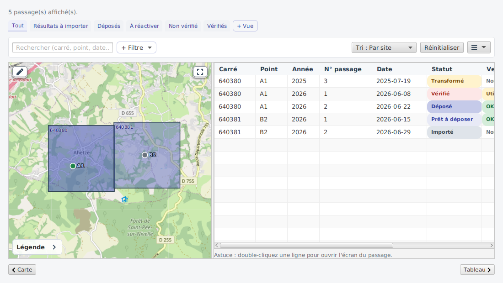
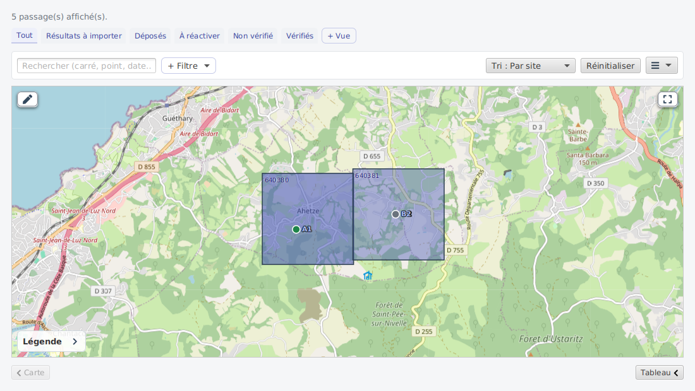
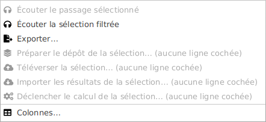
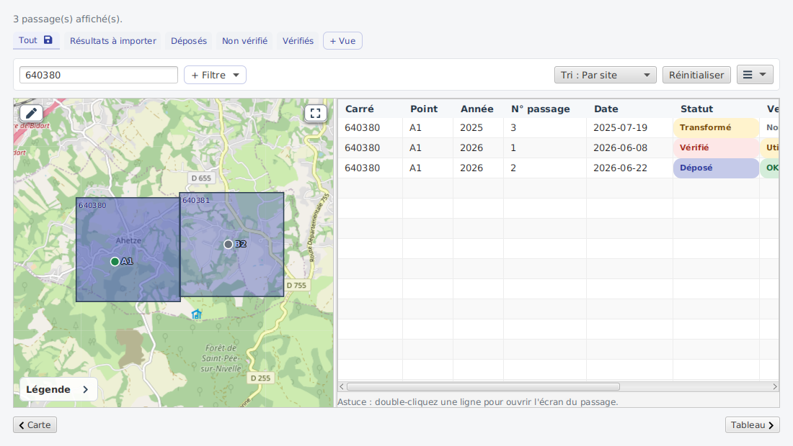
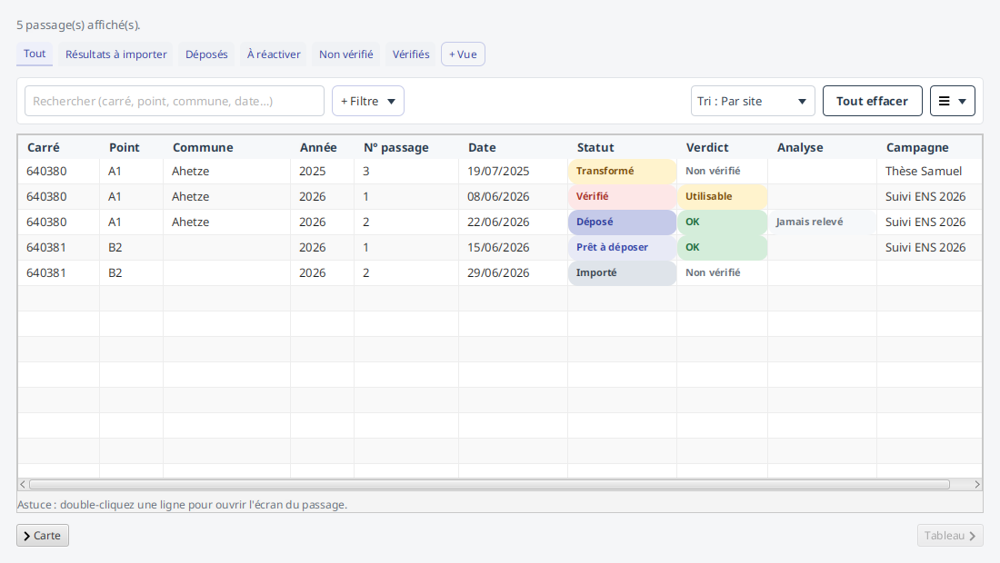
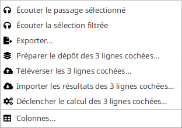
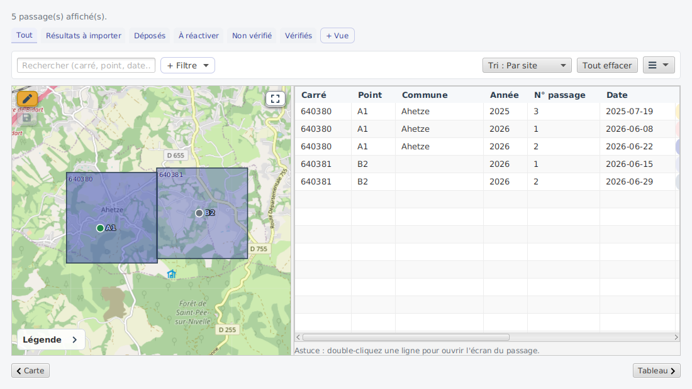
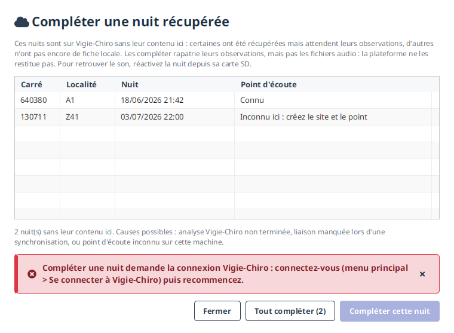
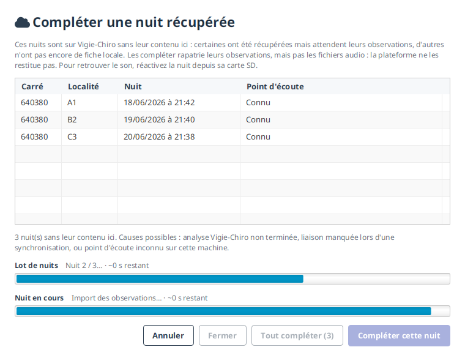
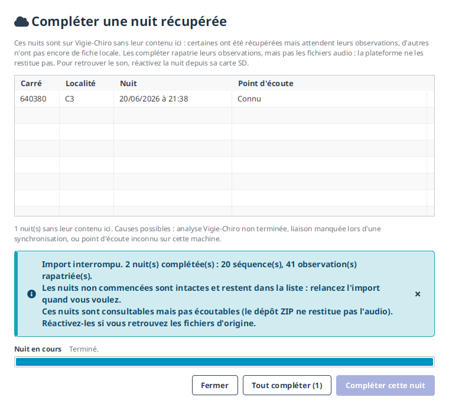

Carte & passages¶
La vue Carte & passages rassemble tous vos passages, tous sites confondus. Elle combine une carte (à gauche) et un tableau (à droite) : la carte situe vos sites et points dans l'espace, le tableau les liste pour les trier, filtrer et exporter. C'est l'écran adapté quand on suit plusieurs sites et qu'on veut une vision d'ensemble.
La carte et le tableau¶

À gauche, la carte affiche chaque carré (maille 2 km du carroyage national Vigie-Chiro) et
ses points d'écoute sous forme de marqueurs colorés selon le statut du dernier passage (gris = importé,
indigo = transformé / vérifié, cyan = prêt à déposer, vert = déposé). Chaque carré affiche son
numéro dans son coin, en petit repère discret (texte sombre à fin liseré clair) qui reste
lisible sans s'imposer ; chaque marqueur porte, lui, son nom de point abrégé (p. ex. A1) en
clair, finement contouré pour bien se détacher du fond de carte. Un point sans coordonnées GPS
est tout de même affiché, au centre de
son carré, sous forme de marqueur approximatif : un disque blanc cerné d'un anneau pointillé
(au lieu d'une pastille pleine), pour qu'on le repère sans le confondre avec une position mesurée ; son
info-bulle le signale (« position approximative, centre du carré »). Si plusieurs points d'un même carré
sont sans GPS, ils sont répartis en éventail autour du centre pour ne pas se superposer. Seul reste
non plaçable un point dont le carré est hors carroyage officiel et sans aucun point géolocalisé
(centre inconnu) : il n'apparaît pas sur la carte. Le remplissage
de chaque carré reflète sa densité de passages : plus un carré est fréquenté, plus son indigo
est foncé (échelle relative au carré le plus actif). Au survol d'un carré ou d'un point, une
info-bulle récapitule ses mini-stats (nombre de passages, points avec GPS et points à
localiser, répartition des statuts ; statut dominant pour un point) ; ces stats sont aussi lues par
les lecteurs d'écran. Une légende
superposée en bas à gauche
rappelle le code couleur des statuts et l'échelle de densité ; elle s'ouvre repliée par défaut
(réduite à son seul titre, pour ne pas masquer les points) et un chevron la déplie au besoin. Un
bouton ⤢ en haut à droite recadre la carte sur l'ensemble des carrés et points affichés
(pratique après un zoom ou un déplacement manuel). Le fond de carte OpenStreetMap apparaît quand une
connexion est disponible. La carte montre
tous les sites (vue d'ensemble) : elle n'est pas restreinte par les filtres du tableau.
Deux boutons placés en bas, chacun à l'extrémité sous le panneau qu'il masque (◀ Carte à gauche, Tableau ▶ à droite), replient entièrement un panneau pour donner toute la largeur à l'autre (et le rouvrent) ; on ne peut pas masquer les deux. Replier la carte est aussi la dégradation élégante hors connexion : quand le fond OpenStreetMap n'est pas joignable, le tableau seul reste pleinement exploitable.

C'est aussi l'état où l'on arrive en cliquant « Voir sur la carte » depuis un site, un point ou un passage : le tableau se replie automatiquement pour centrer l'attention sur la carte.
À droite, le tableau liste chaque passage (carré, point, année, numéro, date, statut, verdict, analyse, campagne). La barre du haut permet de filtrer (carré, statut, verdict, année, analyse, campagne) et de réinitialiser les filtres ; un menu ☰ à droite de la barre regroupe les actions secondaires (Vues enregistrées et export de la sélection). On trie en cliquant l'en-tête d'une colonne (Année et N° de passage se trient numériquement), en plus du sélecteur d'ordres. Un double-clic sur une ligne ouvre l'écran du passage correspondant.

Une entrée grisée dit ce qui lui manque : « Écouter le passage sélectionné » n'est active qu'une fois une ligne choisie. Deux autres entrées n'apparaissent que dans leur contexte : Reconstruire un passage manquant… en mode connecté, et Reculer les analyses quand un relevé est possible.
Un clic droit sur une ligne réunit les actions de ce passage : ouvrir le passage, écouter le passage, ouvrir sa page Vigie-Chiro (grisée si le passage n'est pas lié à la plateforme) et copier son n° de carré. Le même menu laisse choisir et réordonner les colonnes (entrée « Colonnes… », également dans le menu ☰) : voir Agir sur une ligne et Personnaliser les tableaux.
Quand un filtre est actif, le tableau et le résumé se recalculent en conséquence :

Regrouper par campagne¶
Une campagne regroupe les nuits d'un même suivi. Le tableau la porte de trois façons :
- une colonne Campagne (vide pour une nuit non rattachée), masquable comme les autres depuis le réglage des colonnes ;
- un ordre Par campagne, alphabétique, qui place les nuits non rattachées en dernier ;
- un filtre Campagne, à saisie libre : taper
ensretient « Suivi ENS ». Un passage sans campagne n'est jamais retenu par ce filtre — le demander, c'est demander les nuits qui en ont une.
L'export CSV de la sélection porte une colonne campagne, en fin de ligne.
La colonne se trouve en fin de tableau : à côté de la carte, elle sort du cadre et il faut faire défiler horizontalement. Replier la carte avec la poignée ◀ Carte donne toute la largeur au tableau et montre toutes les colonnes d'un coup.

Le rattachement lui-même se fait depuis la fenêtre Modifier le passage, décrite dans Le passage.
Agir sur plusieurs nuits à la fois¶
Rentrer d'une semaine de terrain avec six cartes SD, c'était refaire six fois le même parcours en six écrans, sans qu'aucune de ces six répétitions ne demande une décision différente.
Cochez plusieurs lignes du tableau (Ctrl+clic, ou Maj+clic pour une plage), puis choisissez dans le menu ☰ l'une des quatre actions groupées :
| Action | Ce qu'elle fait |
|---|---|
| Préparer le dépôt | contrôle la cohérence et fait passer les nuits à « Prêt à déposer » |
| Téléverser | envoie les fichiers vers Vigie-Chiro |
| Importer les résultats | rapatrie les identifications Tadarida |
| Déclencher le calcul | demande à Vigie-Chiro d'analyser les nuits déposées |
Le libellé de chaque entrée dit combien de lignes sont cochées, et pourquoi il est grisé s'il l'est.

On vous dit d'abord ce qui sera écarté¶
Une fenêtre annonce combien de nuits seront traitées, et lesquelles ne le seront pas, chacune avec son motif : « déjà déposé », « pas encore vérifié », « hors connexion à Vigie-Chiro »… Vous pouvez renoncer.
C'est le point important : un traitement qui ignorerait la moitié de votre sélection sans le dire serait pire qu'un traitement qui refuse.
Une nuit en échec n'arrête pas les autres¶
Les nuits sont traitées l'une après l'autre, jamais en même temps : le rythme d'envoi vers Vigie-Chiro reste celui d'une seule nuit, quel que soit le nombre de lignes cochées.
Si l'une échoue, les suivantes sont traitées quand même. Le compte rendu final dit, pour chaque nuit, ce qui s'est passé — « fait », « écarté : … », « échec : … ».
Renoncer en cours de route¶
Le bouton Annuler arrête le lot. Les nuits déjà traitées le restent, celles qui n'ont pas commencé ne sont pas touchées : chacune est soit dans son état d'avant, soit dans son état d'après, jamais entre les deux.
Le téléversement fait exception, et c'est voulu : il s'arrête entre deux fichiers plutôt que d'attendre la fin de la nuit en cours, qui peut prendre plusieurs minutes. La nuit reste alors en « Dépôt en cours » et reprend là où elle en était au lancement suivant.
« Déclencher le calcul » ne relance jamais
Une nuit déjà calculée est signalée en échec, avec ce motif, plutôt que recalculée. Ce n'est pas une limitation : à chaque calcul, Vigie-Chiro efface les observations avant de recalculer, et sur une nuit déposée en archive, les fichiers ne sont plus là pour être relus. Le résultat serait définitivement perdu. Relancer volontairement une nuit reste possible, nuit par nuit, en ligne de commande.
« Importer les résultats » ne remplace jamais
Une nuit qui a déjà ses résultats est écartée. Réimporter écrase vos validations et l'avis du validateur ; cela se décide depuis Sons & validation, nuit par nuit.
Les mêmes quatre actions en ligne de commande
vigiechiro traiter-passages --action televerser --passage 12 --passage 13 --passage 14 applique la
même action aux mêmes conditions, avec les mêmes écarts et le même compte rendu, une ligne par nuit.
--json en donne une version exploitable par un script. Les quatre noms d'action sont
preparer-depot, televerser, importer-resultats et declencher-calcul.
Éditer les positions des points¶
Le bouton « ✎ » superposé en haut à gauche de la carte fait passer celle-ci en mode édition (la pince devient ambrée quand le mode est actif) : on peut alors glisser un marqueur pour corriger le GPS d'un point. Le marqueur reste dans son carré (il s'arrête au bord de la maille 2 km) ; un point sans GPS, affiché au centre de son carré, se place en le faisant glisser à l'endroit voulu. Déplacer un point ne touche que ses coordonnées : son code, son descriptif et ses passages sont conservés.

Les déplacements ne sont pas enregistrés au fil de l'eau : ils s'accumulent jusqu'au clic sur le bouton « 💾 » qui apparaît alors sur la carte, sous la pince (inactif tant qu'aucun point n'a bougé). Si vous quittez le mode édition alors que des déplacements ne sont pas enregistrés, une fenêtre vous propose de les Enregistrer, de les Abandonner, ou d'Annuler (pour rester en édition).
Une nuit manque dans le tableau ?¶
Il arrive qu'une nuit existe sur Vigie-Chiro et nulle part sur cette machine : vous l'avez déposée depuis un autre ordinateur, avant d'utiliser cette application, ou vous avez réinstallé votre poste. Elle ne figure alors dans aucune ligne de ce tableau.
En fait, la synchronisation « Mes sites » les rapatrie déjà automatiquement, contenu compris : la nuit apparaît dans l'historique de son carré avec ses observations, prête à être consultée.
Il reste des cas où une nuit arrive sans son contenu : Vigie-Chiro n'a pas fini de l'analyser, la liaison a manqué au moment de la lire, ou son point d'écoute n'existe pas encore sur cette machine. Le menu ☰ › Compléter une nuit récupérée… liste précisément ces nuits-là et permet de les compléter : une par une (Compléter cette nuit) ou toutes en une passe (Tout compléter, avec un suivi à deux niveaux - la nuit en cours et le lot entier - et un bouton Annuler pour interrompre proprement).


Annuler n'annule pas ce qui est fait. La nuit en cours va au bout, les nuits non commencées ne sont pas touchées, et le compte rendu dit combien ont été complétées : elles disparaissent de la liste, celles qui restent y sont toujours. Relancer l'import reprend là où vous vous êtes arrêté.

Ce qu'une nuit complétée ne contient pas
La plateforme ne rend pas tout. Une nuit complétée reste donc sans audio (c'est un passage sans audio : consultable, pas écoutable), sans journal du capteur ni relevé climatique, et sans les séquences que Tadarida n'a pas identifiées : le serveur ne les connaît pas. Ces manques sont affichés à la fin de l'opération, pas passés sous silence.
Si vous retrouvez les fichiers d'origine, ouvrez le passage et utilisez Réactiver ce passage.
L'entrée n'apparaît que si vous êtes connecté à Vigie-Chiro (elle interroge la plateforme). Et une nuit dont le point d'écoute n'existe pas encore ici ne peut pas être reconstruite : créez d'abord le site et le point dans Mes sites. La rattacher à un autre point produirait une donnée fausse.
Vues sauvegardées¶
Une combinaison de filtres utile peut être enregistrée sous un nom pour être rejouée d'un clic. Les vues enregistrées s'affichent comme des onglets au-dessus du tableau : cliquer sur le nom d'un onglet rejoue sa combinaison de filtres. Le bouton « + Vue », au bout de la barre d'onglets, enregistre les filtres courants sous un nouveau nom. Sur chaque onglet, le crayon le renomme et la croix le supprime.